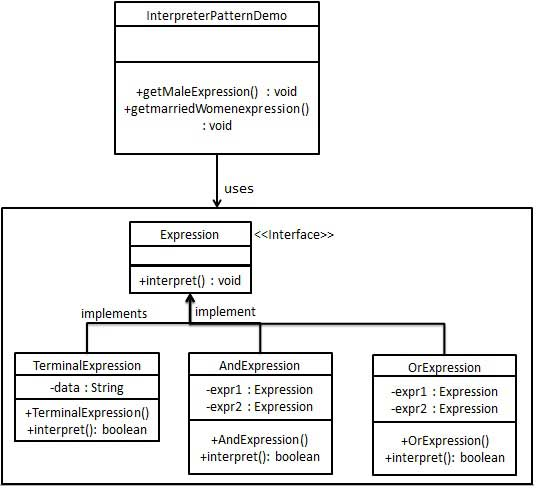

Interpreter Pattern
The Interpreter Pattern provides a way to evaluate the grammar or expressions of a language, and it belongs to behavioral patterns.
The Interpreter Pattern, given a language, defines a representation of its grammar and defines an interpreter that uses this representation to interpret sentences in the language.
This pattern is used in SQL parsing, symbol processing engines, etc.
Introduction
intent
Define a grammatical representation for a language and create an interpreter that can interpret sentences in the language.Main problems solved
- The Interpreter Pattern is used to build an interpreter capable of interpreting sentences of a specific language or grammar.
Use Case
- When a particular type of problem occurs frequently, and instances of these problems can be expressed through a simple language.
Implementation Approach
- Define Grammar: Defines the terminal and non-terminal symbols of the language.
- Build syntax tree: Builds the corresponding syntax tree structure based on the sentences of the language.
- Create context class: Contains the global information needed during the interpretation process, usually a HashMap.
Key code
- Terminal and non-terminal symbols: Define the grammar structure of the language.
- Environment class: Stores the external environment information needed during the interpretation process.
Application example
- Compiler: The Interpreter Pattern can be used in compiler design to interpret source code into target code.
- Regular expression: The Interpreter Pattern can be used to parse and execute regular expressions.
- SQL parsing: The Interpreter Pattern can be used to parse and execute SQL statements.
Advantages
- Good extensibility: Easy to add new ways to interpret expressions.
- Flexibility: Can easily extend or modify the grammar as needed.
- Easy to implement simple grammars: For simple languages, it is relatively easy to implement.
Disadvantages
- Limited use scenarios: Only suitable for simple grammars that are appropriate for interpretation.
- Difficult to Maintain: For complex grammars, maintenance and extension become difficult.
- Class explosion: It may produce many classes, with one class corresponding to each grammar rule.
- Recursive call: The Interpreter Pattern usually uses recursive calls, which can be difficult to understand and trace.
Usage suggestions
- Consider using the Interpreter Pattern when you need to interpret and execute sentences in a language.
- Ensure the grammar is simple to avoid making the system overly complex.
Notes
- The Interpreter Pattern may not be the first choice in Java. If applicable scenarios arise, consider using libraries such as expression4J instead.
Structure
The Interpreter Pattern includes the following main roles:
Abstract Expression: Defines the abstract interface of the interpreter, declares the methods for interpretation operations, usually an abstract class or interface.
Terminal Expression: A terminal expression class that implements the abstract expression interface, used to represent terminals in the language (such as variables, constants, etc.), and implements the corresponding interpretation operations.
Non-terminal Expression: A non-terminal expression class that implements the abstract expression interface, used to represent non-terminals in the language (such as sentences, expressions, etc.), and implements the corresponding interpretation operations.
Context: Contains some global information outside the interpreter, provided to the interpreter during the interpretation process, usually used to store variable values, save interpreter state, etc.
Client: Creates and configures specific interpreter objects, and passes the expression to be interpreted to the interpreter for interpretation.
Implementation
We will create an interfaceExpressionand implementsExpressionConcrete class of the interface. Defines the main interpreter in the context.TerminalExpressionClass. Other classesOrExpression、AndExpressionFor creating composite expressions.
InterpreterPatternDemo, our demo class usesExpressionClass creation rules and the parsing of demonstration expressions.

Step 1
Create an expression interface.
Expression.java
Step 2
Create entity classes that implement the above interface.
TerminalExpression.java
OrExpression.java
AndExpression.java
Step 3
InterpreterPatternDemoUsageExpressionclasses to create rules and parse them.
InterpreterPatternDemo.java
Step 4
Execute the program, output results:
John is male? true Julie is a married women? trueother extensions